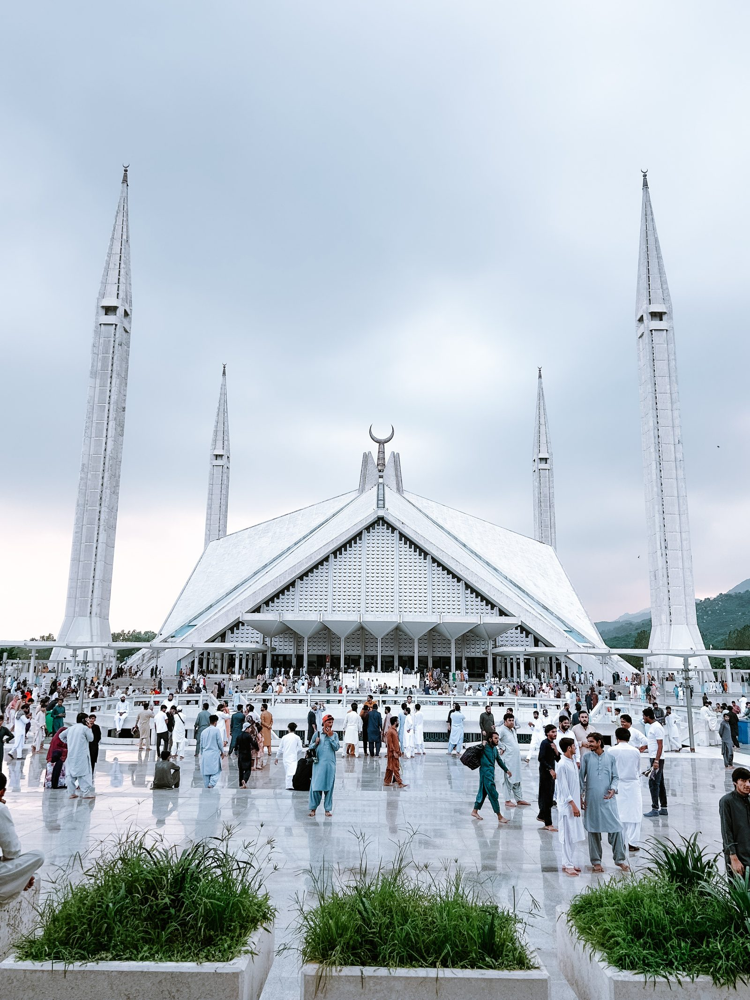

Islamabad — arrival & Faisal Mosque
Land in Islamabad before 10 AM. Our guides meet you at the airport and transfer you to the hotel for a light breakfast and a short rest. After lunch we exchange money, then visit the iconic Faisal Mosque — one of the largest in the world — before returning for dinner.
Faisal Mosque
